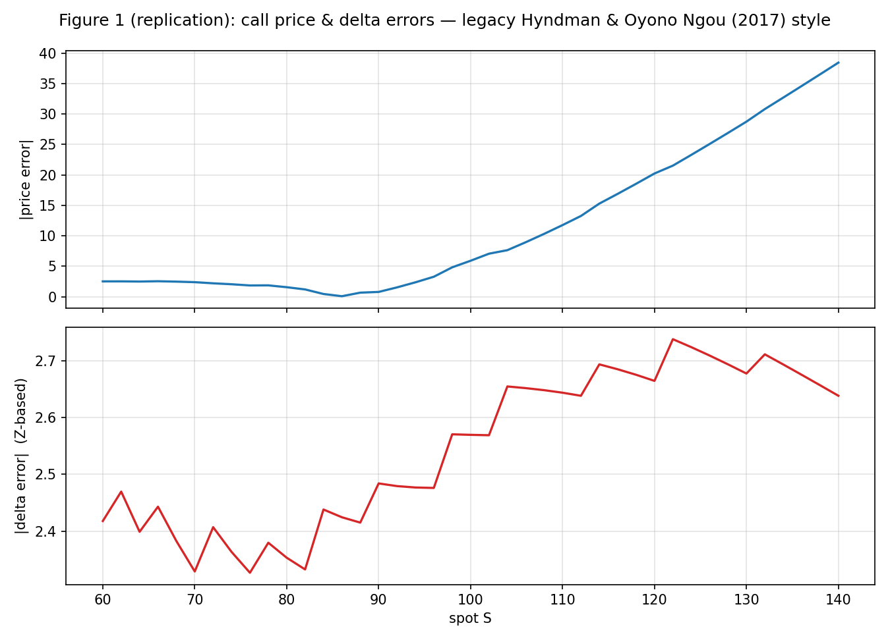
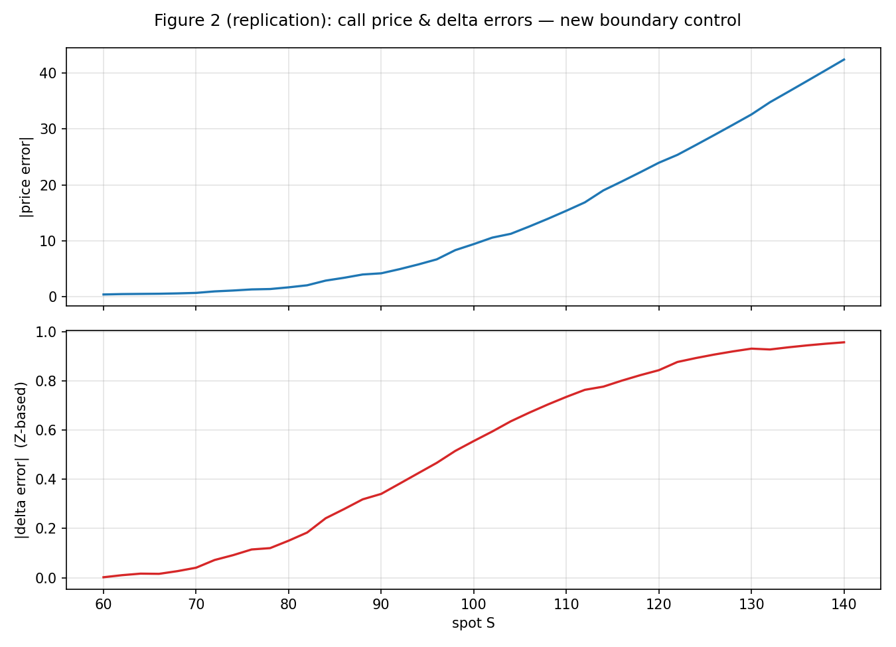
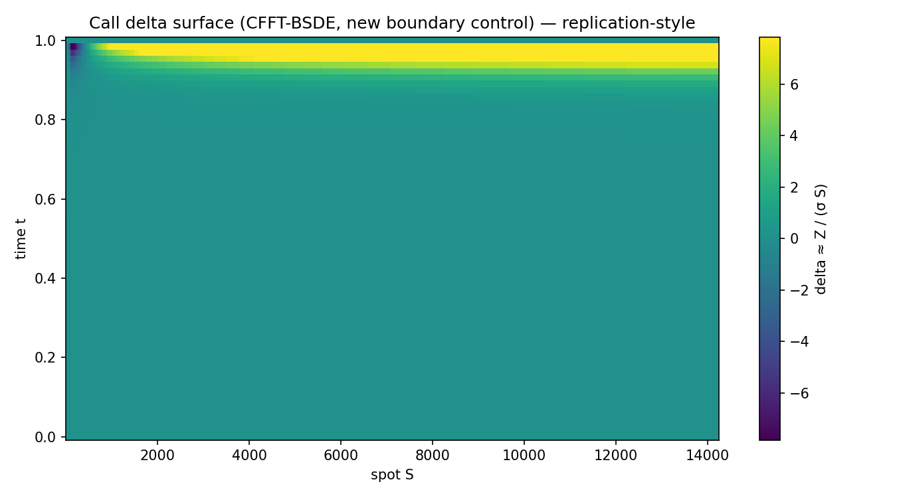

MATH5030 · Convolution–FFT backward BSDE solver · benchmark vs Black–Scholes European call
This report summarizes the finished replication bundle in the repository: committed benchmark CSVs, paper-style error curves and a delta surface plot, and the two numerical schemes exposed by the CLI. The theoretical reference is the course manuscript paper.pdf (boundary error control for CFFT-BSDE).
CLI method | Role |
|---|---|
new_boundary_control |
New scheme: fixed damping and time-varying exponential shift with recovery terms (boundary-error control). |
legacy_hyndman_2017 |
Legacy path after Hyndman & Oyono Ngou (2017): adaptive damping heuristic and linear shift in log-price. |
All paths below are relative to the repository root (this file lives in results/).
| Artifact | Description |
|---|---|
results/numerical_results_quick.csv | One-point sweep at spot_eval = 100; coarse grid smoke test. |
results/numerical_results_surface_quick.csv | Spot grid 60–140 (41 points); used for paper-style error curves. |
results/benchmark_smoke.csv | Minimal two-row sanity check. |
results/figure_01_legacy_price_delta_errors.png | |Price| and |delta| errors vs spot (legacy). |
results/figure_02_new_boundary_price_delta_errors.png | Same layout for new boundary control. |
results/figure_03_new_boundary_delta_surface.png | Delta heatmap vs (spot, time) from a fresh core solve. |
Aggregates below are not fine-grid paper.pdf replication; they characterize the committed
quick exports so you can sanity-check the pipeline and compare methods on identical inputs.
| CSV | new_boundary_control |
legacy_hyndman_2017 |
|---|---|---|
numerical_results_quick.csv (8 rows each) |
mean abs_price_err ≈ 9.13 (max ≈ 9.41); mean abs_delta_z_err ≈ 0.557 (max ≈ 0.559) |
mean abs_price_err ≈ 2475.88 (max ≈ 5824.38); mean abs_delta_z_err ≈ 7.28 (max ≈ 25.60) |
numerical_results_surface_quick.csv (41 rows each) |
mean abs_price_err ≈ 13.79 (max ≈ 42.39); mean abs_delta_z_err ≈ 0.511 (max ≈ 0.957) |
mean abs_price_err ≈ 11.56 (max ≈ 38.43); mean abs_delta_z_err ≈ 2.55 (max ≈ 2.74) |
Open this HTML from disk with the images alongside it (same results/ folder) so relative image paths resolve.



solve_core (new_boundary_control).Install the package, rerun benchmarks, then rebuild figures.
python -m pip install -e . python -m cfft_bsde.cli --benchmark-compare ^ --benchmark-methods "new_boundary_control,legacy_hyndman_2017" ^ --benchmark-model black_scholes_call --spot 100 --strike 100 --rate 0.01 --sigma 0.2 --maturity 1 ^ --benchmark-n-values "64,128" --benchmark-l-values "10,12" --benchmark-grid-values "128,256" ^ --benchmark-output results/numerical_results_quick.csv python -m cfft_bsde.cli --benchmark-compare ^ --benchmark-methods "new_boundary_control,legacy_hyndman_2017" ^ --benchmark-model black_scholes_call --benchmark-full-surface ^ --surface-spot-min 60 --surface-spot-max 140 --surface-spot-points 41 ^ --benchmark-n-values 64 --benchmark-l-values 10 --benchmark-grid-values 128 ^ --benchmark-output results/numerical_results_surface_quick.csv python -m pip install matplotlib python -m cfft_bsde.plot_paper_figures --surface-csv results/numerical_results_surface_quick.csv --output-dir results
On Unix shells, replace caret line continuations (^) with backslashes or single-line commands. For paper-scale grids, increase n, L, and N in the CLI flags and expect much longer runtimes.
Each benchmark row includes Black–Scholes reference prices/deltas, CFFT values, and absolute or relative errors; see the package driver cfft_bsde.benchmark_driver for the authoritative field list.